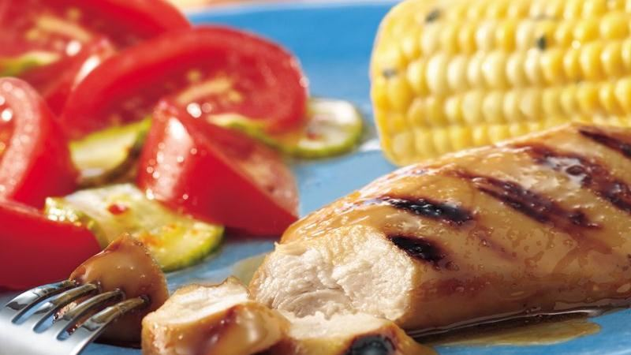

2 medium any color bell peppers, cut into 2-inch pieces
1/4cup apple jelly
1 tablespoon Dijon mustard
2 medium unpeeled apples, quartered
DIRECTIONS
Heat oven to 425°F. Spray 13x9-inch (3-quart) glass baking dish with nonstick cooking spray. Place sausage and bell peppers in sprayed baking dish. Pierce sausage several times with fork.
In small saucepan, combine jelly and mustard. Heat over low heat until melted, stirring frequently. Brush half of jelly mixture over sausage and bell peppers.
Bake at 425°F. for 10 minutes.
Remove baking dish from oven. Add apples to baking dish. Brush remaining jelly mixture over sausage, bell peppers and apples.
Return to oven; bake an additional 10 minutes or until thoroughly heated. Cut sausage before serving.
APPLE HONEY MUSTARD CHICKEN

INGREDIENTS
1 (12-oz.) JAR APPLE JELLY
1 TEASPOON GINGER
1/2 TEASPOON GARLIC POWDER
2 TABLESPOONS SOY SAUCE
2 TABLESPOONS HONEY MUSTARD
DIRECTIONS
Heat grill. In small saucepan, combine all glaze ingredients; mix well. Bring to a boil over medium heat. Boil 1 minute, stirring constantlyli>
When ready to grill, lightly brush glaze on one sidechicken breast half. Place chicken, glaze side down, on gas grill over medium heat or on charcoal grill 4 to 6 inches from medium coals. Lightly brush glaze over chicken; cook 5 to 8 minutes.
Turn chicken; cook an additional 5 to 8 minutes or until fork-tender and juices run clear. Bring any remaining glaze to a boil; serve with chicken.